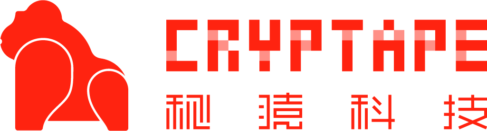
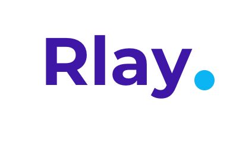
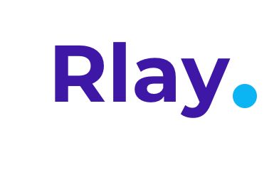
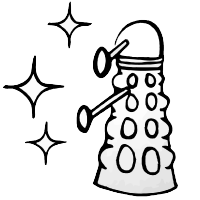

Rust
is for Blockchain
This guy →
Brian Anderson
brson.github.io
What up?
A domain for Rust
Why Rust
for blockchain?
Why blockchain
for Rust??



 



Badass Rust projects
(from blockchain companies)
VMs in Rust
EVM · WASM · RISC-V · eBPF · x86

Dalek
Endless Rust crypto
Yeah, there's more...
How to help
Closing thoughts
Rust
is for Blockchain
https://github.com
/brson/
rust-is-for-blockchain
/brson/
rust-is-for-blockchain